Печатная версия отчёта. Интерактивные части (древо с карточками, фильтры хроники, увеличение документов) доступны в электронной версии.
Две крестьянские семьи. Одна жила на Волхове под Новгородом, другая в Покровском уезде Владимирской губернии. Их соединил брак Михаила Тимофеевича Кузнецова, городового Дворцовой полиции, и Екатерины Ивановны Суховой.
Всё, что здесь написано, взято из документов: метрических книг, ревизских сказок, исповедных ведомостей, переписи 1897 года и дела Михаила Кузнецова из фонда Управления дворцового коменданта. Если о чём-то документа нет и вывод сделан по косвенным признакам, мы так и пишем, а сам вывод выделяем вот так.
123года от первой ревизской сказки до последнего листа дела
7поколений по линии Суховых, от Прокофия до дочерей Михаила
49листов в деле Михаила Кузнецова (РГИА)
Глава 1
Новгородский и Покровский уезды
Кузнецовы жили в Новгородском уезде Новгородской губернии, на берегах Волхова, километрах в сорока к северу от Новгорода. В метриках 1873–1877 годов отец Михаила записан крестьянином деревни Быстрицы Подберезской волости, с 1879 года — деревни Шевелевой. Сам Михаил во всех документах дела 3573 записан «из крестьян Новгородской губернии и уезда, Высоковской волости, деревни Шевелева». Мать была из соседней деревни Руссы; волость Руссы в метриках не указана. Все три деревни относились к приходу Городковской церкви (сейчас это Чудовский район Новгородской области).
С 1816 года эти места входили в округа аракчеевских военных поселений. Так называли попытку Александра I содержать армию без больших расходов: в казённые деревни ставили на постой полки, а местных крестьян переводили в «военные поселяне». Они должны были и пахать землю, и нести военную службу, носили форму, жили по уставу, в одинаковых домах, построенных по плану. Мальчиков с детства записывали в кантонисты, будущие солдаты. Руководил поселениями граф А. А. Аракчеев, отсюда и название. Порядки были жёсткими, и в 1831 году в новгородских поселениях вспыхнул бунт. После него поселян перевели в «пахотные солдаты», а в 1857 году поселения упразднили совсем. Штабом ближайшего к Шевелевой округа были Селищенские казармы на Волхове. На карте Безкорниловича у деревень вдоль реки стоят номера: «Шевелево № 8», «Руса № 2», «Городок № 6». Так на картах тех лет помечали поселения округа. Быстрица номера не имеет: это обычная деревня на другом берегу Волхова, у тракта на Подберезье. В 1857 году поселения упразднили, жителей перевели в крестьяне.
Суховы жили в деревне Болдино Копнинской волости Покровского уезда Владимирской губернии, рядом со станцией Болдино Московско-Нижегородской железной дороги. Болдинцы были «казёнными» крестьянами: в 1795 году экономическими, в 1858-м государственными. Мать Екатерины, Татьяна Яковлевна, родилась в соседнем сельце Братонеж. Это было помещичье сельцо, и в 1866 году, при венчании, она названа «временнообязанной», то есть из бывших крепостных.
Между двумя деревнями около 600 километров. Сошлись эти семьи в Петербурге и его пригородах: Михаил служил там с 1898 года, братья Екатерины работали в петербургских типографиях.
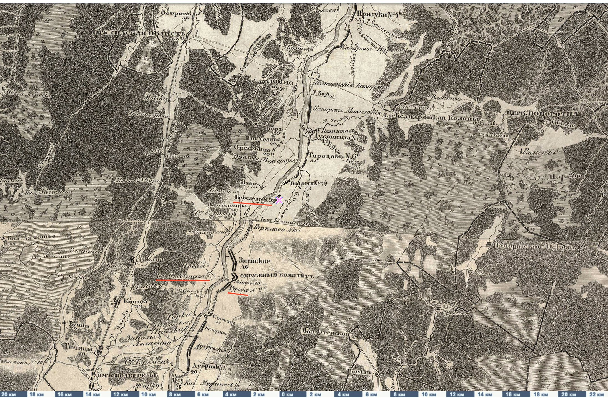
Карта Безкорниловича, середина XIX века. Подчёркнуты Шевелево № 8, Быстрица и Руса № 2. Выше по реке — Селищенские казармы, штаб округа.
Откуда родом и куда переезжали
Деревни обеих семей, губернские города, железные дороги, по которым ездили в Петербург, и известные переезды.
КузнецовыСуховыжелезные дорогиреки и озёра
Старые карты ниже открываются на сайте etomesto.ru. Этот сайт иногда не пускает посетителей из-за рубежа или с браузером на другом языке и пишет про «защиту от ботов». Если так случилось, поставьте русский язык первым в языковых настройках браузера. Главные из этих карт есть и в самом отчёте: глава «Документы», раздел «Карты». Ссылки на современную карту (OpenStreetMap) открываются из любой страны.
Древо разделено на три части. Нажмите на человека, чтобы увидеть, что о нём известно и из какого документа. Пунктиром обведены те, о ком сведений мало.
Кузнецовы: Быстрица, Шевелева, Русса
Михаил Тимофеевич
9.01.1877 – после 1918
Родился в д. Быстрице, рос в Шевелевой. Л.-гв. Конный полк (1898–1903), агентура Петербургского охранного отделения (1903–1906), Охранная агентура Дворцового коменданта (1906–1908), городовой Дворцовой полиции (с 1908). В 1915 году перенёс кровоизлияние в мозг.
ГАНО МК 1877; РГИА 508-2-3573
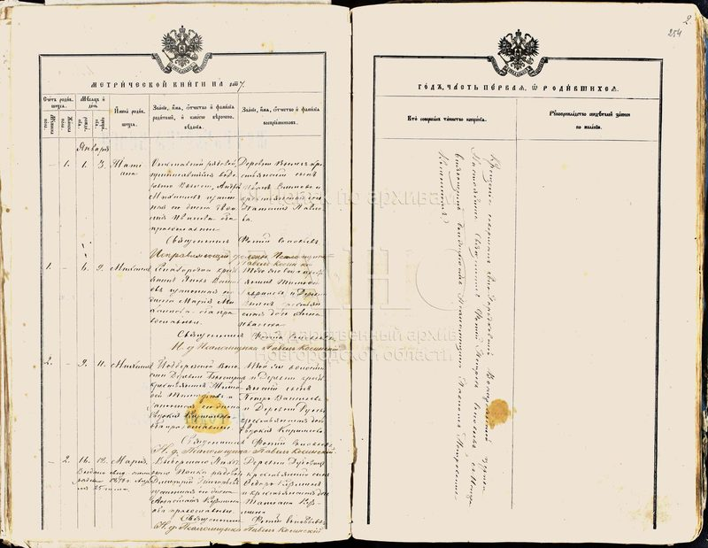
Суховы из Болдино и предки Татьяны Яковлевны из Братонежа
Екатерина Ивановна
20.11.1879 (по делу 1881)
Родилась в Переславском уезде. В 1897 году — 18 лет, дома в Болдино, «плисорезка», неграмотна. Жена Михаила не позднее 1905 года. Дата смерти неизвестна; есть её фотография в старости.
Перепись 1897; РГИА 508-2-3573, л. 22
Семья Михаила и Екатерины: Петергоф и Царское Село
Михаил Тимофеевич
9.01.1877 – после 1918
Родился в д. Быстрице, рос в Шевелевой. Л.-гв. Конный полк (1898–1903), агентура Петербургского охранного отделения (1903–1906), Охранная агентура Дворцового коменданта (1906–1908), городовой Дворцовой полиции (с 1908). В 1915 году перенёс кровоизлияние в мозг.
ГАНО МК 1877; РГИА 508-2-3573
линия Кузнецовыхлиния Суховых и предков Татьяны Яковлевнысведений мало
Глава 3
Кузнецовы из Новгородского уезда
2 февраля 1873 года в Городковской церкви венчались «Новгородского уезда, деревни Быстрицы крестьянин Тимофей Тимофеев» и «деревни Руссы крестьянская дочь девица Евдокия Кириллова». Обоим было по двадцать лет, оба вступали в первый брак. Поручителями со стороны жениха были крестьяне из Быстрицы Пётр Васильев и Сергей Егоров, со стороны невесты — Яков(?) Кириллов из Руссы и Пётр Савельев.
Фамилии «Кузнецов» в метриках ещё нет: в 1870-х крестьян записывали по имени и отчеству. Фамилия появляется в документах самого Михаила, начиная с призыва 1898 года.
За десять лет в семье родились шестеро детей. Крестили их в той же церкви, служили священник Фотий Соловьёв и дьячок Павел Косинский.
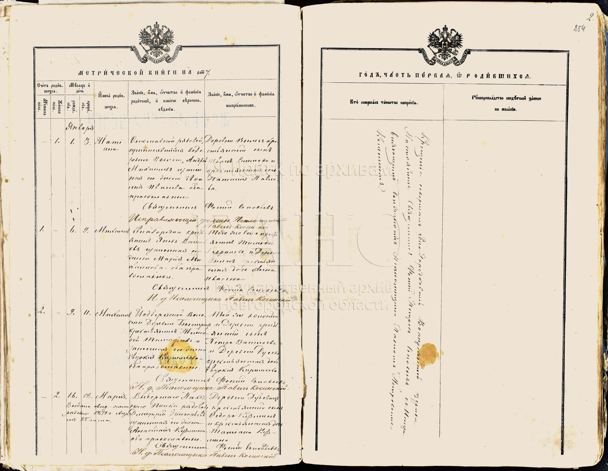
Запись № 2 за январь 1877 года: родился Михаил. Родители — «Подберезской волости деревни Быстрицы крестьянин Тимофей Тимофеев и законная его жена Евдокия Кириллова».
Дети Тимофея и Евдокии
Родился
Крещён
Где записана семья
Крёстные
Феодор
17.02.1874
19.02
д. Быстрица
Пётр Васильев (Быстрица), Евдокия Кириллова (Русса)
Пелагия
28.09.1875
29.09
д. Быстрица
Пётр Васильев, девица Евдокия Кириллова (Русса)
Михаил
09.01.1877
11.01
д. Быстрица
Пётр Васильев, Евдокия Кириллова
Иоанн
23.02.1879
25.02
д. Шевелева
Андрей Тимофеев (Шевелева), Марфа Кириллова (Русса)
Николай
23.07.1881
26.07
д. Шевелева
флота полковник Александр Павлович Шестаков(?), Марфа Кириллова
Павел
05.11.1883
06.11
д. Шевелева
Андрей Тимофеев, вдова Елена Кириллова (Русса)
Крёстных подбирали из родни. Со стороны матери это всегда Кирилловы из Руссы: Евдокия, Марфа, Елена. Скорее всего, сёстры Евдокии Кирилловны. Со стороны отца — Андрей Тимофеев из Шевелевой, вероятно, брат Тимофея, и Пётр Васильев из Быстрицы, который был и поручителем на свадьбе.
14 января 1884 года Тимофей Тимофеев умер «от горячки». Ему было тридцать лет. Младшему сыну Павлу исполнилось два месяца, Михаилу — семь лет. Похоронили его 16 января.
Евдокия Кирилловна осталась вдовой с шестью детьми. В 1909 году она уже жила у Михаила в Царском Селе, а в 1914-м значилась «на его иждивении».
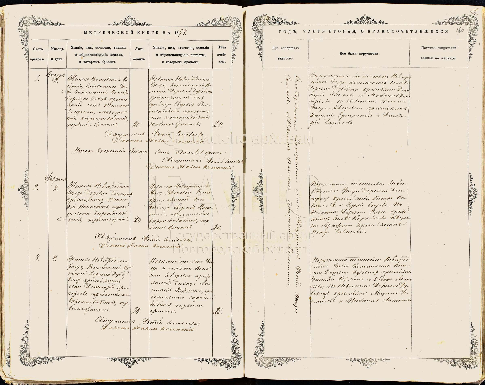
Брак, 2 февраля 1873 года, запись № 2.
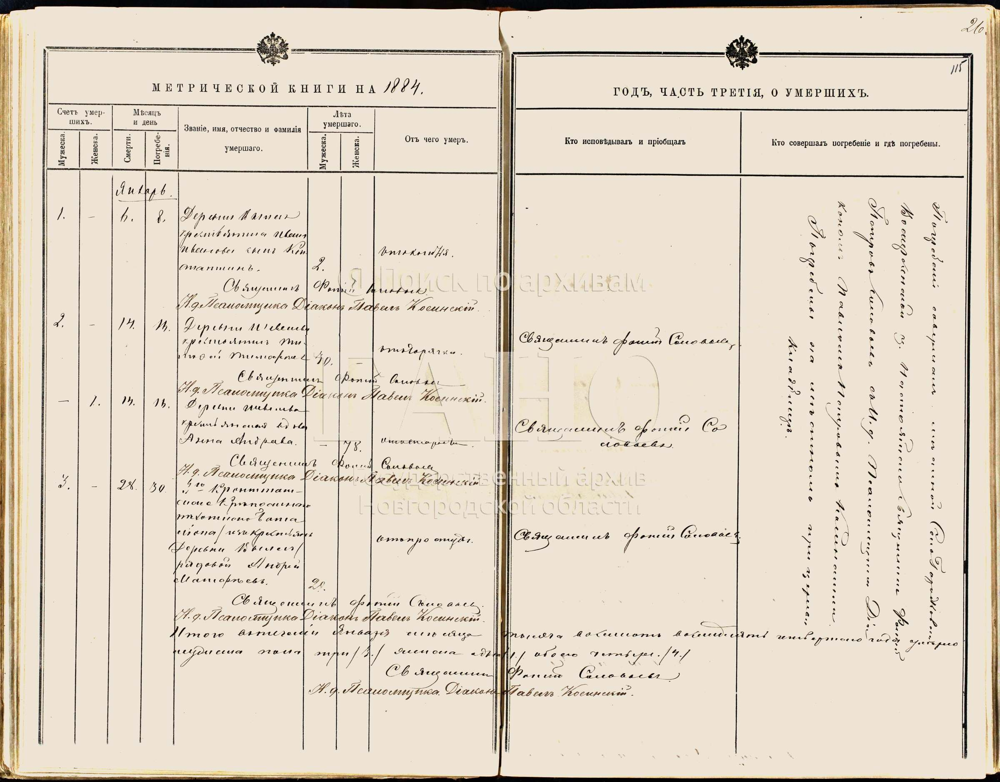
Смерть Тимофея Тимофеева, 14 января 1884 года, запись № 2.
Глава 4
Суховы из Болдино
Самая ранняя запись — ревизская сказка 1795 года по деревне Болдино. В ней записаны сыновья Прокофия: Володимер (умер в 1786 году) с женой Матрёной Евсеевой и Иван с женой Устиньей Гавриловной. От Ивана Прокофьева идёт линия Суховых: его сын Артемий был женат на Евдокии Романовой, их сын Ефим — дед Екатерины Ивановны.
В сказке 1858 года (20 апреля) записана семья № 20: Ефим Артемьев, 41½ года, его сыновья Иван (16 лет) и Трофим (4 года, родился в 1853-м) и дочь Марфа (12 лет). Жены у Ефима уже нет. Исповедная ведомость 1860 года называет его вдовцом.
В том же 1858 году в соседнем сельце Братонеж, у помещика Ивана Ивановича Сарачёва(?), записана семья Якова Васильева, 31 года. При его отце, Василии Осипове, в сказке помечено «умре в 1854 году», хотя в исповедной ведомости 1855 года тот ещё записан живым. От первой жены у Якова сын Егор, пяти лет, и дочь Татьяна, восьми лет. Вторая жена — Настасья Ефимова. При семье живут племянницы Якова, Марья и Елена Ивановы.
Имя матери Татьяны известно из исповедной ведомости 1855 года. Там записан двор № 290: «Василий Осипов вдов» 65 лет, «сын его Яков» 29 лет, «жена его Анна Яковлева» 25 лет, «дети их Татиана» 6 лет и Егор 2 года. Через три года, в сказке 1858-го, у Якова уже вторая жена.
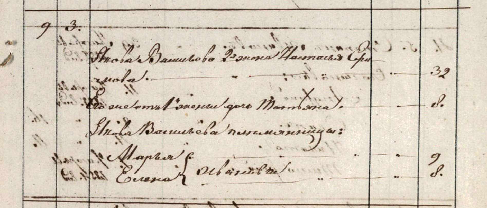
Братонеж, 1858 год: «его же от 1-й жены дочь Татьяна — 8».
Венчание 23 января 1866 года
«Г[осударственных] Имуществ деревни Болдина крестьянской сын Иван Ефимов, православного вероисповедания, первым браком», 24 года. «Деревни Братонежа временнообязанная крест[ьянская] дочь Татиана Яковлева, православного вероисповедания, первым браком», 17 лет.
Поручителями со стороны жениха были отставной унтер-офицер Фёдор Андреев и крестьянин Феоктист Иванов из Болдино, со стороны невесты — крестьяне сельца Братонеж Павел Иванов и Константин Семёнов. Пять лет спустя, 22 декабря 1871 года, родился первый сын, Василий. Его крестили 26 декабря; крёстными были «той же деревни крестьянский сын Григорий Трофимов и девица Дарья Козьмина(?)».
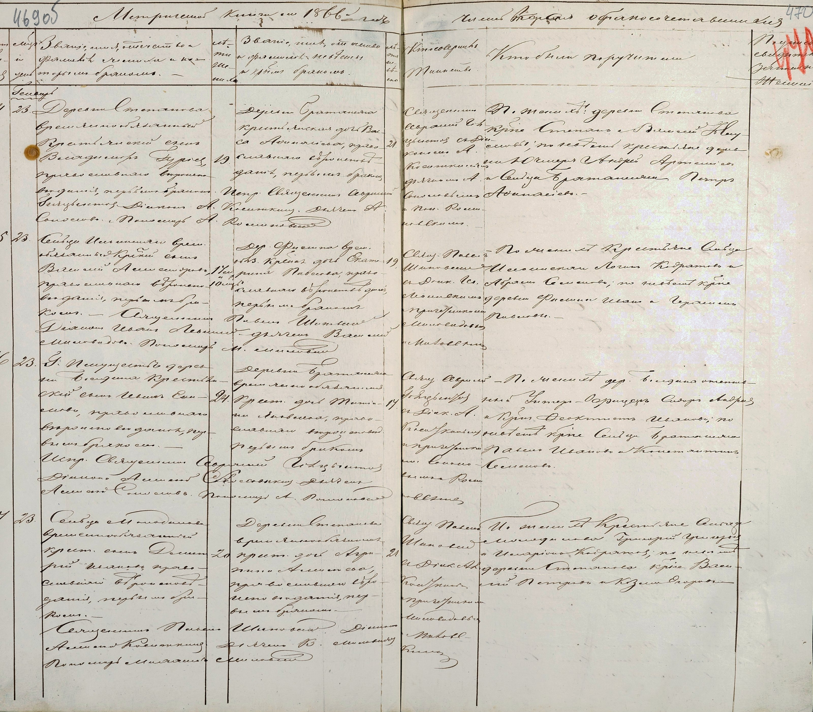
Запись № 16, третья на развороте.
Двор в Болдино, январь 1897 года
Перепись 1897 года застала Суховых без отца. Хозяином двора записан старший сын Василий, но сам он, как и брат Алексей, жил и работал в Петербурге. Дома были мать и младшие сёстры. Сёстры работали плисорезками. В день переписи дома были шесть женщин, а ещё у Суховых временно жили трое рабочих-портных.
хозяин25Василий Ивановродился в Болдино · холосттипограф-печатник; живёт в С.-Петербурге
мать48Татиана Яковлевародилась в Болдино · вдовасредства от детей; грамотна, самоучка
сестра22Александра Ивановародом из Переславского уезда · девицаприслуга; в отлучке в Покровском уезде
брат20Алексей Ивановродом из Переславского уезда · холостпомощник печатника; живёт в С.-Петербурге
сестра18Екатерина Ивановародом из Переславского уезда · девицаземледелие; плисорезка; неграмотна
сестра16Анна Ивановародом из Юрьевского уездапри брате; плисорезка
сестра14Анастасия Ивановародом из Юрьевского уездапри брате; плисорезка
сестра11Варвара Ивановародилась в Болдиноученица школы грамоты
сестра6Елизавета Ивановародилась в Болдиноучится в школе грамоты
рабочий25Иван Семенов Ильин(?)родом из Покровского уезда · женатпортной, временно
рабочий20Петр Семенов Макаровродом из Покровского уезда · холостпортной, временно
рабочий21Никита Александров Кирюшкин(?)родом из Покровского уезда · холостмастер-портной, временно
Плисорезка — работница, которая вручную разрезала ворс на плисе. Плис — хлопчатобумажная ткань с ворсом, «бумажный бархат». Ворс у него получался не на станке: ткань ткали с длинными перекрытиями нитей, а потом эти нити разрезали специальным ножом, полоса за полосой. Работу брали на дом, и в деревнях Покровского уезда ею занимались многие женщины и девушки. В 1897 году плисорезками записаны Екатерина, Анна и Анастасия; у Екатерины главным занятием указано земледелие, а плис — побочным.
Переписной лист формы А № 27, д. Болдино, Копнинская волость, переписной участок № 4, счётный участок № 7. Дома: 2 жилых строения, деревянные, крыты деревом. ГАВО ф. 433 оп. 1 д. 206. Возраст указан на январь 1897 года.
Графа «где родился» объясняет, где жила семья в 1870–1880-х годах. Александра, Алексей и Екатерина родились в Переславском уезде, Анна и Анастасия — в Юрьевском, Варвара и Елизавета — уже в Болдино. Значит, примерно с 1874 по 1884 год Иван Ефимович жил с семьёй вне деревни. Возможно, работал на фабрике; в документах причина не названа. Иван Ефимович умер между 1891 годом, когда родилась Елизавета, и началом 1897-го.
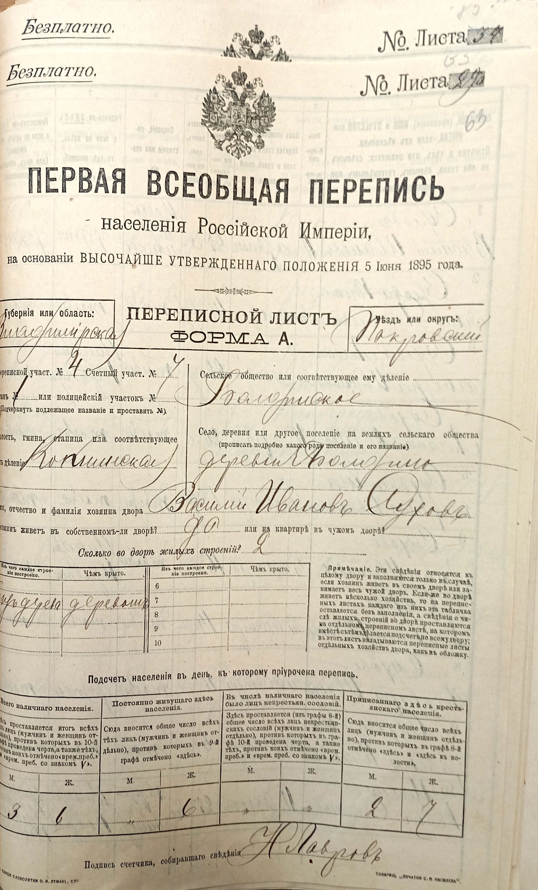
Переписной лист, лицевая сторона.
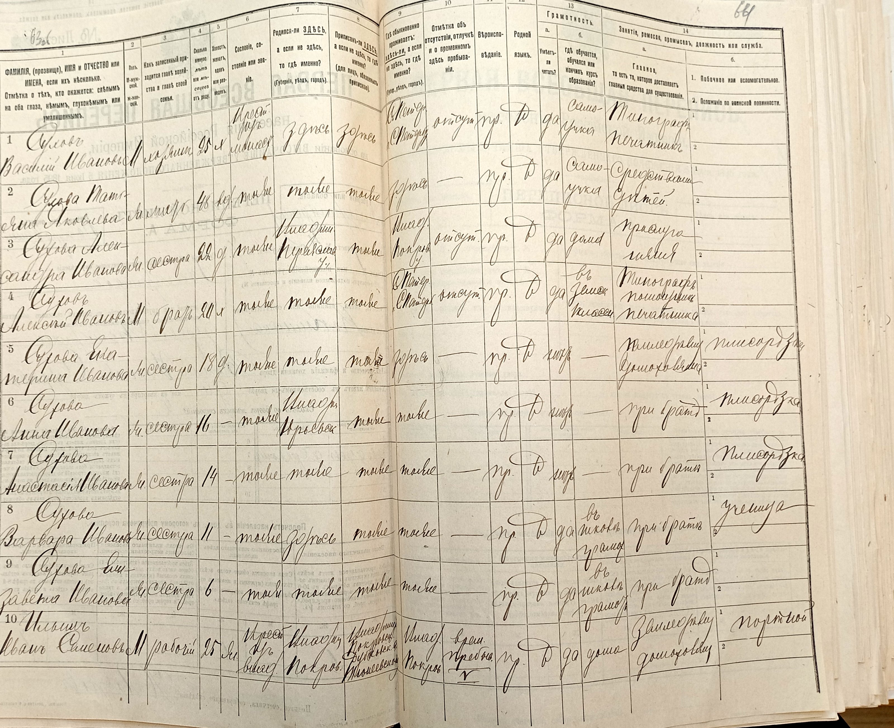
Разворот со списком семьи.
Глава 5
Михаил Тимофеевич Кузнецов
Главный источник — дело «О городовом Михаиле Кузнецове» из фонда Управления дворцового коменданта (РГИА, ф. 508, оп. 2, д. 3573), 49 листов, 1908–1918 годы. В нём собраны прошение о приёме, проверки благонадёжности, анкеты, три послужных списка (полковой, агентурный и полицейский), приказы, отпускные билеты, его собственные докладные записки, телеграммы и медицинский акт.
По приёмному списку 1898 года Михаил был ростом 2 аршина 7⅛ вершка (около 174 см), объём груди 21 вершок, грамотный, «занятие — хлебопашество». Учился в церковно-приходской школе, но курса не окончил. Ремесла не знал. До призыва жил при семье и пахал землю.
Его служба шла через четыре учреждения: лейб-гвардии Конный полк, агентуру Петербургского охранного отделения, Охранную агентуру при Дворцовом коменданте и Дворцовую полицию. Последние два обслуживали только царскую семью: агентура охраняла её в пути и на прогулках, полиция — во дворцах и дворцовых городах. Поэтому почти каждая строка послужного списка привязана к переездам двора: зимой Царское Село, летом Петергоф, в другие месяцы финские шхеры, Крым, поездки по стране.
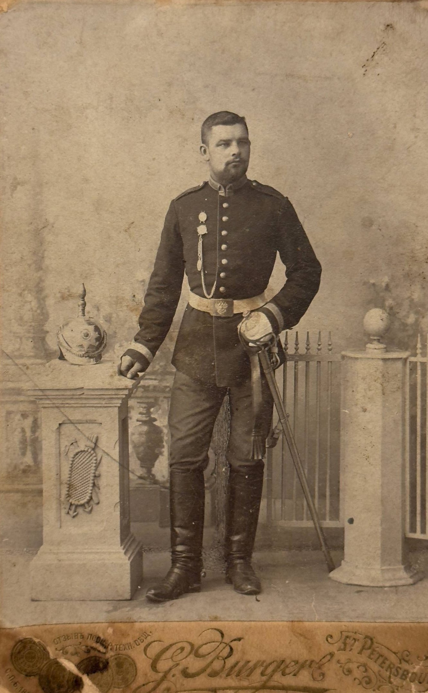
Ателье G. Burger, Петербург. Каска с шишаком и белая амуниция — тяжёлая гвардейская кавалерия, строевой нижний чин унтер-офицерского звания. Приборный металл, то есть цвет пуговиц и металлических частей формы, жёлтый; такой был у Л.-гв. Конного и у Кирасирского Её Величества полков; по документам Михаил служил в Конном. Унтер-офицером он стал 22 февраля 1901 года, в запас ушёл 24 ноября 1903-го. Значит, снимок сделан между февралём 1901 и ноябрём 1903 года. Определение формы — с форума ВГД.
Лента жизни
Глава 6
1908 год: из агентуры в полицию
Весной 1908 года Михаил, старший команды в Охранной агентуре, подал прошение о приёме в Дворцовую полицию. Жил он тогда в деревне Знаменке под Петергофом, «д. № 3 Петровой», и ему шёл тридцать второй год. Начальник Дворцовой полиции полковник Герарди дал ход прошению. Начальник агентуры полковник Спиридович был против.
весна 1908Прошение Михаила о приёме в Дворцовую полицию. Живёт в д. Знаменке, д. № 3. На полях: «31 г., рост 2–7½ в., правосл., женат, детей 2». лист
20 маяАгентура назначает его в Петергофский питомник изучать дрессировку полицейских собак.
27 маяГерарди рассылает четыре секретных запроса о благонадёжности (№ 9325–9328): в Департамент полиции, Петербургское охранное отделение, Сыскную полицию, губернское жандармское управление.
30 маяЗапрос № 9326 по ошибке попадает в Ярославское жандармское управление; оттуда его пересылают в Новгородское.
7–8 июняНовгородское ГЖУ просит уездного исправника собрать сведения; исправник поручает приставу 2-го стана.
10 июняДепартамент полиции: «сведений в делах Департамента не имеется».
18 июняИсправник: поведения хорошего, под судом не был, «на родине не проживает 10 лет, в настоящее время проживает в гор. Царском Селе на службе тайной полиции».
28 июняГерарди — Спиридовичу (№ 12252): до Кузнецова «дошла очередь», нет ли препятствий. лист
1 июляСпиридович (№ 1050, «экстренно»): оставить просьбу «без уважения». лист
11 октябряРасписка: получен револьвер «Наган» № 1779 с кобурой и 14 пулями, свисток и инструкция. лист
«В интересах вверенной мне Агентуры прошу Ваше Высокоблагородие просьбу Кузнецова, об определении его в Дворцовую Полицию, оставить без уважения. К сему считаю долгом присовокупить, что Кузнецову разрешения на явку к Вашему Высокоблагородию… мною даваемо не было, а наоборот было в том отказано».
О поведении Кузнецова в письме ничего нет. Спиридович не хотел отдавать опытного человека: за полтора года Михаил стал старшим команды, получил серебряные часы из Кабинета, а за несколько дней до начала переписки агентура отправила его учиться дрессировке полицейских собак. Второй довод начальника — Кузнецов пошёл к Герарди без разрешения.
Судя по приказам, спор решил дворцовый комендант, которому подчинялись обе службы. 1 октября Михаил стал сверхштатным городовым. 10 октября Спиридович сам выслал Герарди его послужной список с отметкой «взысканиям не подвергался».
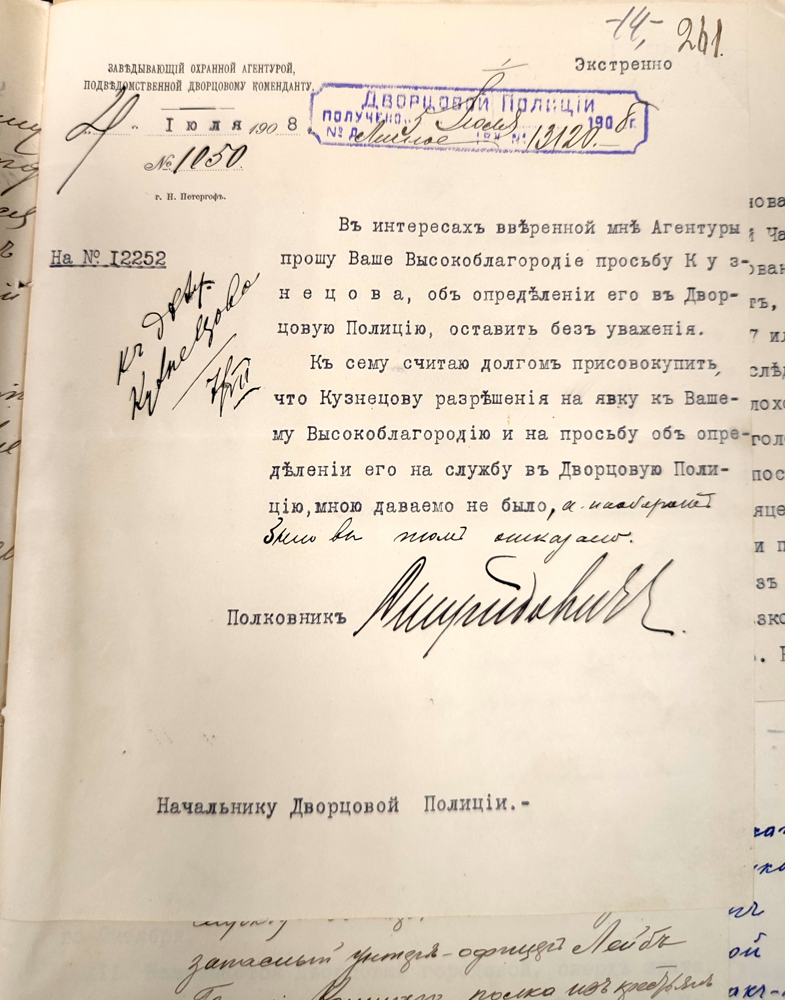
Ответ Спиридовича, лист 14 дела.
Глава 7
Хроника службы и жизни
Здесь собрано всё, что есть в деле 3573 и в метриках, по годам: каждое назначение, переезд, награда, благодарность, отпуск, взыскание и семейное событие. Ссылки «лист» ведут к снимку листа. Кнопки ниже оставляют только один вид записей.
Где служба Михаила связана с поездками царской семьи, под записью в рамке «Рядом» сказано, что происходило в это время при дворе. Эти сведения взяты не из дела, а из дневника Николая II и исторических работ; список — в главе «Источники».
1873
2 февраля
Венчание родителей, Тимофея Тимофеева и Евдокии Кирилловой, в Городковской церкви. лист
Умер отец, Тимофей Тимофеев, 30 лет, «от горячки». Михаилу семь лет. лист
1898
4 ноября
Принят на военную службу Новгородским уездным по воинской повинности присутствием (приёмная расписка № 94, 3-й участок). Назначен в войска Гвардии. Начало службы считается с 1 января 1899 года.
19 ноября
Зачислен рядовым во 2-й эскадрон лейб-гвардии Конного полка. лист
Уволен в запас армии (приказ по полку № 328). «Походов не был, наказаниям не подвергался». лист
15 декабря
Определён в агентуру С.-Петербургского охранного отделения. Этой датой подписана фотокарточка в РГИА (ф. 508, оп. 4, д. 3183).
1904
Вероятнее всего, в этом году — венчание с Екатериной Ивановной Суховой. Запись пока не найдена: в ноябре 1903 года Михаил ещё холост, а в январе 1905-го уже женат.
1905
6 октября
В Петергофе родилась дочь Зинаида, крещена 28 октября. лист
1906
27 февраля
Принят в Охранную агентуру, подведомственную Дворцовому коменданту, «на оклад с добавочными». Зачислен в Александровскую команду для постовой службы. лист
РядомВ 1906 году охрана царя в пути и на прогулках была выведена из охранного отделения и подчинена Дворцовому коменданту. Начальником новой Охранной агентуры стал А. И. Спиридович.
25 апреля
С переездом Их Величеств выбыл в Петергоф, назначен в Ново-Петергофскую команду. лист
РядомПо дневнику Николая II, двор переехал в Петергоф 26 апреля: «В 2 часа отправились на жительство в Петергоф». Команда агентуры выехала накануне.
Назначен старшим Павловской команды (приказание по агентуре № 78). лист
3 декабря
Благодарность «за образцовую расстановку наряда в Ковалеве(?) при Высочайшей охоте». лист
декабрь
Из Кабинета Его Величества пожалованы серебряные часы с изображением Государственного герба (приказ по Управлению Дворцового коменданта № 127). лист
13 декабря
Квартирные добавочные увеличены с 10 до 15 рублей в месяц с 1 декабря. лист
1907
18 мая
С переездом двора — в Петергоф, назначен старшим Знаменской команды. лист
30 июля – 9 августа
Командирован в Красное Село на время пребывания Их Величеств на манёврах. лист
30 июля
Родилась дочь Вера. Крещена 10 августа; крёстная — сестра жены, Александра Ивановна Сухова. лист
18 августа – 6 октября
В команде из 100 человек — в Финляндских шхерах, для охраны Их Величеств во время плавания. лист
Рядом29 августа 1907 года яхта «Штандарт» с царской семьёй наскочила в финских шхерах на не отмеченный на картах камень. Яхту сняли с камня 1 сентября с помощью ледокола.
27 октября
С переездом двора — в Царское Село, объездной Тярлевской команды. лист
В послужном списке отмечено: «умеет бегать на лыжах». лист
20 мая
С двором — в Петергоф. Назначен в Петергофский питомник для изучения дрессировки полицейских собак. лист
РядомПитомник служебных собак Охранной агентуры основали 24 декабря 1907 года по предложению Спиридовича, в Новом Петергофе. Первых шесть собак купили в Германии; в мае 1909 года питомник перевели в Александровку под Царским Селом.
весна – лето
Прошение о переходе в Дворцовую полицию и переписка между полковником Герарди и полковником Спиридовичем (подробно — в главе 6). лист
19 августа – 1 октября
Отпуск по семейным обстоятельствам; вернулся в срок. лист
1 октября
Уволен из агентуры «за переходом на службу в Дворцовую Полицию». Определён сверхштатным городовым с окладом штатного городового младшего оклада (приказ по Дворцовой полиции № 131 от 2 октября; приказ по Управлению Дворцового коменданта № 165 от 4 октября). лист
11 октября
Получил револьвер «Наган» № 1779 с принадлежностями и 14 пулями, свисток и инструкцию. лист
после октября
Король Датский пожаловал серебряную медаль; на её принятие и ношение последовало Высочайшее разрешение. лист
1909
7 января
Просит разрешить матери, Евдокии Кирилловне, временно жить у него в квартире. Разрешено по телефону 8 января. лист
25 февраля
Дворцовая полиция отправляет в Высоковское волостное правление его паспорт № 173 и просит выслать паспортную книжку на него с женой и детьми; вложено 15 копеек марками. Книжка выдана на руки 5 марта.
Высочайшая благодарность в числе прочих чинов за службу во время пребывания императора на Южном берегу Крыма. лист
РядомОсенью 1909 года семья жила в Крыму, в старом Ливадийском дворце. В 1910 году его разобрали и начали строить новый, Белый.
1910
16 февраля
Просит разрешения брать уроки у студента Петербургского университета Владимира Георгиевича Стойко(?), домашнего учителя детей графа Гудовича, «на право получения 1-го классного чина». Учителя проверили по картотеке Департамента полиции. лист
1 мая
Зачислен в штат на младший оклад, с добавочным вознаграждением 120 рублей в год (приказ № 45 от 8 мая).
1 июня
Просит отпуск на месяц на родину: «по заключению доктора болезнь моей жены может лишь использовать родной климат и покойная жизнь». Адрес: Селищенское почтовое отделение, д. Шевелева. лист
3 июня – 4 июля
Отпуск в Новгородскую губернию (билет № 1195, подписан полковником Герарди). лист
Нагрудный знак в память 200-летия города Царского Села (в списке без даты; юбилей — 1910).
14 ноября
Рапорт с поста «от Зелёного моста до Адмиралтейства, по берегу пруда»: мальчик 10–12 лет, катаясь на санях, упал в прорубь; его вытащил 13-летний Павел Ильин. «Ввиду прогулки Его Императорского Величества мне не представилось возможным выяснить их подробно». лист
1911
16 апреля
Светло-бронзовая медаль в память 200-летия Полтавской победы, на Андреевской ленте (приказ по Дворцовой полиции № 49). лист
14 мая
Родилась дочь Надежда. Крещена 22 мая; крёстная — сестра жены, Анна Ивановна Сухова. лист
6 декабря
Серебряная медаль «за усердие» на Станиславской ленте. лист
1912
1 января
Новогодний выход в Зимнем дворце: император приехал из Царского Села к 10 утра, был выход, обедня и приём дипломатов. Городовой Кузнецов стоял на съезде гостей. лист
РядомДневник Николая II, 1 января 1912: «Уехал в 10 час. в Петербург прямо в Зимний Дв[орец]. Погода морозная и солнечная… В 11 час. начался выход. После обедни скучный прием дипломатов в Георгиевской зале». В Царское Село император вернулся к 4 часам.
10 января
Четыре наряда на службу вне очереди «за нераспорядительность во время съезда в Императорский Зимний Дворец 1-го Января 1912 года». Наложено начальником Дворцовой полиции; сведение подал полицейский надзиратель Кигинько(?). Единственное взыскание за всю службу. лист
март
Семья «отправлена во Владимирскую губернию», к Суховым в Болдино. лист
25 мая
Высочайшая благодарность за службу во время пребывания императора на Южном берегу Крыма в 1911 и 1912 годах. лист
Рядом1911: в конце августа двор был в Киеве, где 1 сентября в театре при императоре смертельно ранили Столыпина; оттуда семья уехала в Крым, и в сентябре в Ливадии освятили новый Белый дворец. 1912: семья приехала в Ливадию 18 марта; в дневнике записано: «Радость огромная снова быть здесь».
июнь
Просит отпуск к семье «до возвращения Их Величеств из Финляндских шхер». Адрес: «ст. Болдино, Московско-Ниж. ж. д., д. Болдино, дом Суховых». лист
РядомЛетом 1912 года семья плавала на «Штандарте» в шхерах; в конце июня в Балтийском порту прошла встреча Николая II с Вильгельмом II. Михаил в это время был в отпуске у Суховых.
21 июня – 15 июля
Отпуск во Владимирскую губернию (билет от 14 июня).
26 августа
Светло-бронзовая медаль в память 100-летия Отечественной войны, на Владимирской ленте. лист
РядомВ этот день исполнилось сто лет Бородинскому сражению. Николай II был на Бородинском поле, у Спасо-Бородинского монастыря и главного памятника. Медаль в память 100-летия Отечественной войны Михаил получил в тот же день.
6 сентября
Высочайшая благодарность за службу во время пребывания Их Величеств в Бородине и Москве. лист
РядомПосле Бородина торжества продолжились в Москве: император с дочерьми был на выставке 1812 года в Историческом музее, смотрел панораму «Бородинская битва» на Чистых прудах, бывал в Кремле.
11 ноября
Высочайшая благодарность за службу в Беловеже и Княжестве Ловичском. лист
РядомОсенью 1912 года семья охотилась в Беловежской пуще, затем жила в Спале, охотничьей резиденции в Княжестве Ловичском. В Спале в начале октября у наследника Алексея началось кровоизлияние, и несколько дней его считали умирающим. В Царское Село вернулись в ноябре.
15 ноября
Бронзовый нагрудный знак за службу в Дворцовой полиции. лист
1913
Бухарская серебряная медаль; на её принятие последовало Высочайшее разрешение. лист
1 июня
Высочайшая благодарность за службу во время путешествия Их Величеств в приволжские города и Москву к 300-летию Дома Романовых. лист
РядомМаршрут поездки 16–27 мая 1913 года: Владимир, Суздаль и Боголюбово, Нижний Новгород, по Волге в Кострому (Ипатьевский монастырь), Ярославль, Ростов, 23 мая Переславль-Залесский, затем Москва. Владимир — губернский город Суховых, а в Переславском уезде родилась Екатерина Ивановна.
15 ноября
Светло-бронзовая медаль в память 300-летия царствования Дома Романовых (приказ по Управлению Дворцового коменданта № 137). лист
Просит разрешить жить у него сестре жены, Александре Ивановне Суховой, 34 лет, крестьянке д. Болдино. лист
6 декабря
Серебряная медаль «за беспорочную службу в полиции» на Аннинской ленте. лист
Рядом6 декабря — именины императора, Николин день. В этот день обычно объявляли награды: так же датированы медаль 1911 года и часы 1915 года.
1915
13 июля
Просит разрешить жить у него родственнице жены, Марфе Андреевне Самойловой из Вологодской губернии. Разрешено телеграммой 15 июля. лист
сентябрь
Потерял сознание; правая половина тела парализована. Больше трёх месяцев пролежал дома. лист
6 декабря
Из Кабинета Его Величества пожалованы золотые открытые часы с цепочкой и Государственным гербом. лист
1916
20 января
Телеграмма из Селищенских казарм на адрес «Царское Село, Колпинская, дом Дворцовой полиции, кв. 52»: «Приезжай хоронить брата». лист
РядомСелищенские казармы — бывший штаб округа военных поселений на Волхове, в нескольких километрах от Шевелевой. Там был ближайший к деревне телеграф: на бланке телеграммы место подачи записано как «Селищ. казарм». Как выглядели казармы — фотография на PastVu.
21–26 января
Пятидневный отпуск на похороны брата в д. Шевелеву. лист
Рядом2 марта 1917 года Николай II отрёкся от престола. С 9 марта он вместе с семьёй находился под арестом в Александровском дворце Царского Села, где жил и служил Михаил.
5 мая
Воинское присутствие признало негодным; уволен от военной службы без зачисления в ополчение. лист
19 мая
Медицинский акт № 1726 врачей Царскосельского госпиталя «бывшего Дворцового ведомства»: после мозгового кровоизлияния 1915 года полупарез правой стороны и артериосклероз, «к труду неспособен, нуждается в посторонней помощи». Подходит под ст. 88 пенсионного устава. Подписали Шрейдер, Гутовский, Реймер, утвердил Андреев-Твердов. лист
1918
Составлен последний послужной список: городовой Дворцовой полиции младшего оклада, жалованья 320 руб., столовых 320, добавочных 120, всего 760 рублей в год. лист
Глава 8
Награды и отличия
К 1918 году у Михаила было пять медалей, два нагрудных знака, две иностранные медали, двое часов из Кабинета Его Величества и два полковых знака. Высочайшую благодарность ему объявляли не меньше семи раз, почти всегда «за отлично-усердную службу во время пребывания Их Величеств» в Крыму или в поездках.
Знак отличного разведчика27.10.1901 · Конный полк
Знак отличного стрелка4.06.1902 (?) · Конный полк
Серебряные часы с Государственным гербом, из Кабинета Его Величествадекабрь 1906 · приказ № 127
Серебряная медаль короля Датскогопосле октября 1908
Нагрудный знак в память 200-летия Царского Селабез даты (юбилей 1910)
Медаль в память 200-летия Полтавской победы, Андреевская лента16.04.1911 · приказ № 49
Медаль «за усердие», Станиславская лента6.12.1911
Медаль в память 100-летия Отечественной войны, Владимирская лента26.08.1912
Нагрудный знак за службу в Дворцовой полиции15.11.1912
Бухарская серебряная медаль1913
Медаль в память 300-летия Дома Романовых15.11.1913 · приказ № 137
Медаль «за беспорочную службу в полиции», Аннинская лента6.12.1914
Золотые открытые часы с цепочкой и гербом, из Кабинета Его Величества6.12.1915
Знак в память 200-летия Царского Села и датская медаль в послужном списке перечислены без даты. Юбилей города отмечали в 1910 году. Датская медаль записана между октябрём 1908 и 1909 годом.
Глава 9
Два Михаила Кузнецова
В описи 4 фонда 508 РГИА есть два дела с одинаковым заголовком: «Кузнецов Михаил. Состоял на службе в охранной агентуре, подведомственной Дворцовому коменданту. Фотография». Это два разных человека.
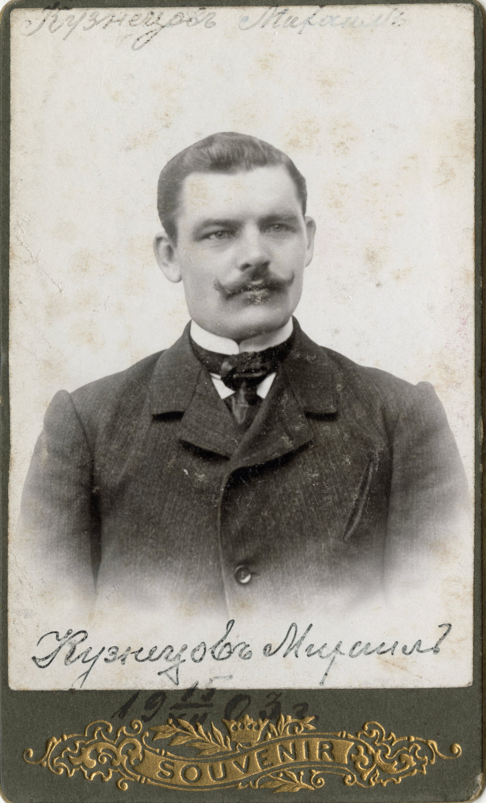
Д. 3183. Надпись «Кузнецовъ Михаилъ, 19 15/XII 03 г.». 15 декабря 1903 года — день, когда Михаил Тимофеевич поступил в агентуру Петербургского охранного отделения. Лицо совпадает с семейным снимком в мундире. Это он.
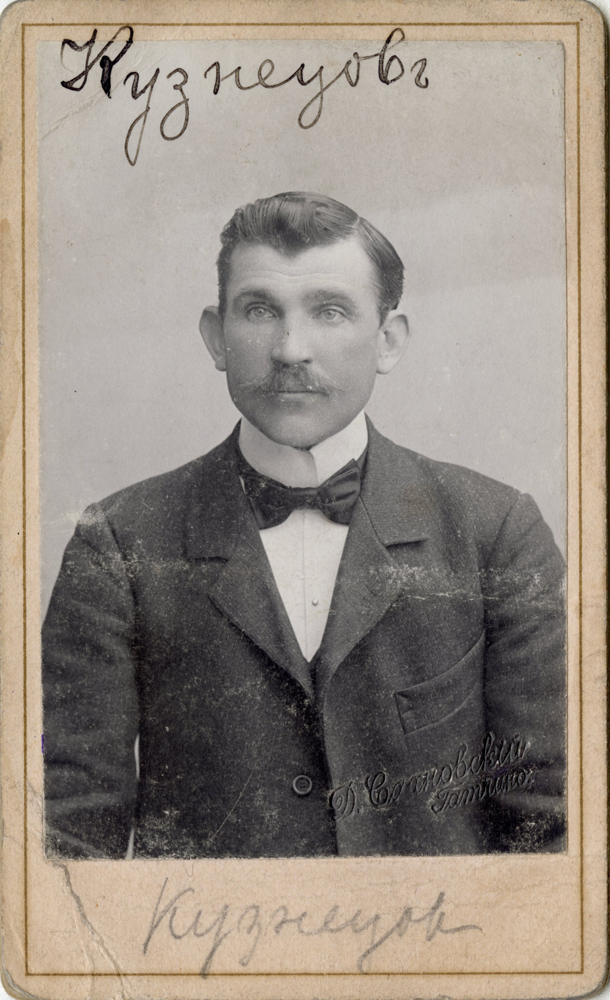
Д. 3184. Другое лицо: высокий лоб с залысинами, светлые глаза, длинный нос, оттопыренные уши. Снимок из гатчинского ателье. На обороте служебной карточки, подписанной подполковником Спиридовичем, написано: «Уволен за нетрезвое поведение 29 Декабря 1906 г.»
В том же декабре 1906 года наш Михаил получил серебряные часы, а его однофамилец был уволен. В агентурном послужном списке Михаила Тимофеевича записано: «взысканиям не подвергался».
Глава 10
Семья в Петергофе и Царском Селе
Запись о венчании Михаила и Екатерины пока не найдена, но время свадьбы можно сузить до года. В полковом послужном списке, закрытом при увольнении в запас 24 ноября 1903 года, в графе о переменах в семейном положении стоит «не было», то есть Михаил был ещё холост. Первая дочь, Зинаида, родилась 6 октября 1905 года, значит, к январю 1905-го они уже были женаты. Остаётся промежуток с декабря 1903 по январь 1905 года. В Рождественский пост и на Святки не венчали, поэтому вероятнее всего, свадьба была в 1904 году: зимой, между Крещением и Масленицей, или осенью, после Покрова. Искать стоит в метрических книгах 1904 года: в Абакумовской церкви и в петербургских и петергофских приходах. Екатерина Ивановна в деле записана родившейся 20 ноября 1881 года; по переписи 1897 года ей было восемнадцать, то есть она родилась около 1879 года.
Записи о крещении всех трёх дочерей найдены в метрических книгах Петербургской консистории. Сёстры Екатерины крестили двух племянниц: Александра — Веру, Анна — Надежду. В записях обе названы «крестьянскими девицами» деревни Болдино.
Крёстные
Зинаида 6.10.1905
Вера 30.07.1907
Надежда 14.05.1911
Родня — сёстры Екатерины
Александра Ивановна Сухова, девица, д. Болдино
Анна Ивановна Сухова, девица, д. Болдино
Знакомые, вероятно сослуживцы
Василий Иванов Кущ(?), крестьянин Полтавской губ., Миргородского у.
Лидия Карловна Холм(?), С.-Петербург
Василий Семенов Булкин(?), крестьянин С.-Петербургской губ.
Матвей Михайлов Пушков(?), мещанин г. Серпухова
ЦГИА СПб ф. 19 оп. 127 д. 1704 (1905), д. 2170 (1907), д. 2613 (1911)
Кто жил в квартире городового
Каждый раз, когда кто-то из родных селился у Михаила, он подавал докладную записку и получал разрешение. Так в деле остался список жильцов его квартиры.
с января 1909Мать, Евдокия Кирилловна Кузнецова, крестьянка д. Шевелевой. Разрешено по телефону 8 января. Умерла 7 апреля 1914 года, 65 лет; хоронили 10 апреля.
с сентября 1914Сестра жены, Александра Ивановна Сухова, крестьянка д. Болдино. В записке ей 34 года.
с июля 1915Родственница жены, Марфа Андреевна Самойлова, крестьянка д. Мыс Ленской волости Яренского уезда Вологодской губернии. Кем именно она приходилась Екатерине, пока не известно.
Адреса семьи по документам: 1908 — деревня Знаменка под Петергофом, д. № 3; 1916 — Царское Село, Колпинская улица, дом Дворцовой полиции, кв. 52. Летом семья уезжала к родным: в 1910 году Михаил просил отпуск на родину, в Шевелеву, потому что врач советовал больной жене «родной климат и покойную жизнь»; в марте 1912 года семью «отправили во Владимирскую губернию», и адрес для писем он дал такой: «ст. Болдино, д. Болдино, дом Суховых».
Глава 11
Хроника двух семей
Годы, когда в обеих семьях и в стране происходило что-то важное для этой истории.
Год
Кузнецовы, Новгородский уезд
Суховы, Покровский уезд
Вокруг
1795
Ревизская сказка по д. Болдино: сыновья Прокофия — Володимер и Иван (жена Устинья Гавриловна).
Пятая ревизия
1816
Округа военных поселений на Волхове; Селищенские казармы.
1855
Исповедная ведомость: в Братонеже Яков с женой Анной Яковлевой и детьми Татианой (6) и Егором (2).
1857
Военные поселения упразднены.
1858
Ревизия: Ефим Артемьев с сыном Иваном в Болдино; Яков Васильев с дочерью Татьяной в Братонеже.
Десятая, последняя ревизия
1861
Братонежские крестьяне — «временнообязанные».
Отмена крепостного права
1866
23 января: венчание Ивана Ефимова и Татианы Яковлевой.
1871
22 декабря: родился Василий.
1873
2 февраля: венчание Тимофея Тимофеева и Евдокии Кирилловой.
1874–1884
Родились Феодор, Пелагия, Михаил (1877), Иоанн, Николай, Павел.
Семья живёт в Переславском, затем Юрьевском уезде; родились Александра, Алексей, Екатерина (1879), Анна, Анастасия.
1884
14 января: умер Тимофей.
1891–1897
Умер Иван Ефимович.
1897
Перепись: двор вдовы Татьяны; Екатерине 18 лет.
Первая всеобщая перепись
1898
Михаил призван в лейб-гвардии Конный полк.
1903–1908
Михаил в агентуре: сначала охранного отделения, затем Дворцового коменданта.
Ни одна карточка не подписана. Кто на снимках, мы определяли по сравнению с документами и по догадкам семьи; всё, что не подтверждено документом, помечено как предположение.
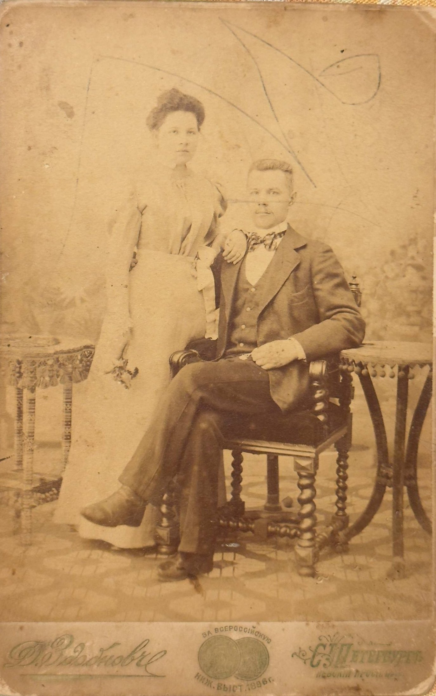
Екатерина (?) с мужчинойВозможно, с братом, Василием или Алексеем Суховым: оба работали в Петербурге. Мужчина на Михаила не похож — у него светлые волосы, круглое лицо и тонкие брови. Ателье Д. С. Здобнова, Петербург.
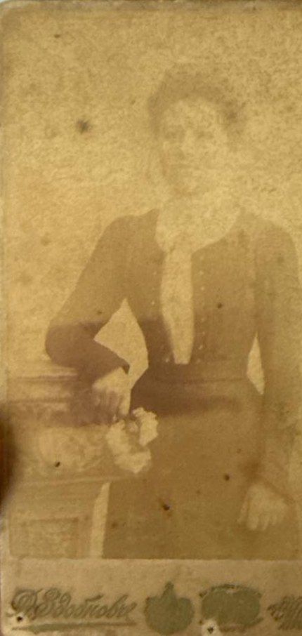
Екатерина ИвановнаАтелье Д. С. Здобнова, Петербург, то же, что у снимка с мужчиной. Предположительно.
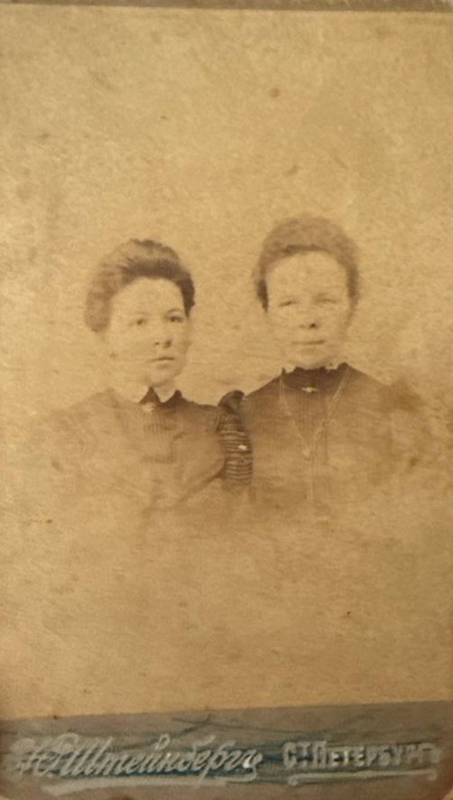
Екатерина с сестройСлева Екатерина. Справа, предположительно, старшая сестра. Из сестёр старше Екатерины только Александра, жившая у Кузнецовых в 1914 году. Ателье Ю. Штейнберга, Невский, 50.
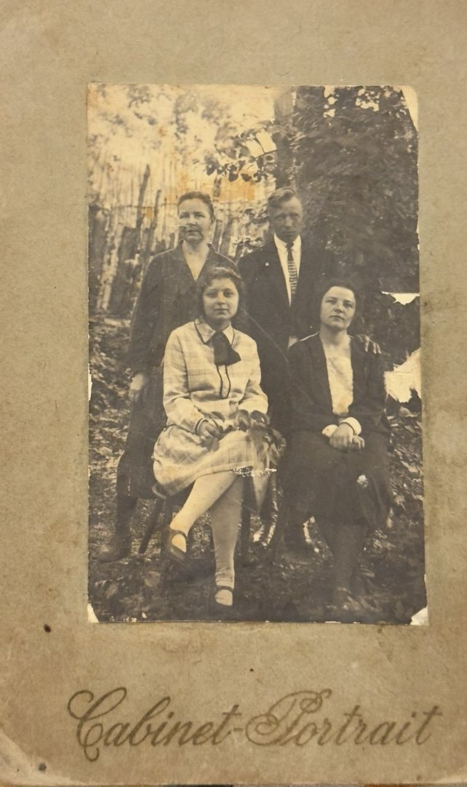
«Н. М. Кузнецова»Надпись на обороте. Екатерина Ивановна с дочерьми Надеждой и Верой и мужем Веры, 1920–1930-е годы.
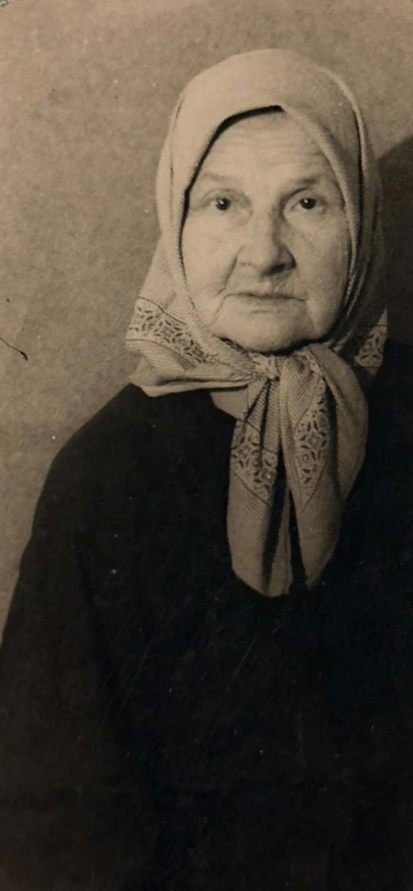
Екатерина Ивановна в старостиГод съёмки неизвестен.
Глава 13
Документы
Снимки документов, на которые опирается рассказ. Нажмите, чтобы открыть крупно. Колесо мыши или кнопки «+» и «−» увеличивают, изображение можно перетаскивать, стрелки на клавиатуре листают.
Метрические книги: Кузнецовы
Суховы и предки Татьяны Яковлевны
Дочери: метрики ЦГИА СПб
Дело 3573, РГИА
РГИА: фото агентов
Карты
Здесь показаны главные листы дела 3573. Все 54 снимка дела полностью — в папке на Google Диске.
Глава 14
Чего мы пока не знаем
Новгородский уезд. По Шевелевой, Руссе и Быстрице документов сохранилось мало. Эти места были в зоне боёв Великой Отечественной войны, и многие метрические книги, ревизские сказки и волостные дела погибли. То, что уцелело, часто в плохом состоянии: листы с утратами, выцветшие чернила. Поэтому линия Кузнецовых пока начинается только с Тимофея и Евдокии.
Покровский уезд. По Суховым сохранились ревизские сказки, исповедные ведомости и перепись, но метрических книг Абакумовской церкви оцифровано пока очень мало. Поиск можно продолжать по конкретным годам, но метрики придётся заказывать в читальном зале архива. Новых сведений это, скорее всего, даст немного, а обойдётся дорого, так что браться за это стоит только под конкретный вопрос.
Когда и где венчались Михаил и ЕкатеринаМежду декабрём 1903 и январём 1905 года, вероятнее всего в 1904-м. Искать в Абакумовской церкви, в Петербурге и в Петергофе.
Метрика Екатерины ИвановныНоябрь 1879 или 1881 года, Переславский уезд Владимирской губернии.
Какой брат умер в январе 1916 годаФёдор, Иоанн, Николай или Павел. Телеграмма «Приезжай хоронить брата» отправлена из Селищенских казарм. Нужна метрическая книга Городковской церкви за 1916 год.
Когда умер Иван Ефимович СуховМежду 1891 и 1897 годами.
Где семья Суховых жила в 1874–1884 годахСначала Переславский, затем Юрьевский уезд.
Что было после 1918 годаПоследний лист дела — послужной список 1918 года. Михаил с 1915 года был тяжело болен. Дата его смерти неизвестна.
Предки Кирилловых и ТимофеяДокументы военных поселений по Шевелевой и Руссе до 1857 года (РГВИА, ГАНО) и ревизская сказка 1858 года по Быстрице.
Кто такая Марфа Андреевна СамойловаВологодская родственница Екатерины. Как она связана с Суховыми, неизвестно.
Есть ли Михаил на фотографиях царской семьиМожно полистать фотоархив семьи Николая II на archive.romanovs100.com. Искать стоит снимки, где Михаил точно был рядом: финские шхеры, август–октябрь 1907; Крым, 1909 и 1911–1914; Бородино и Москва, август 1912; Беловеж и Спала, осень 1912; поездка к 300-летию Романовых, май 1913. До октября 1908 года он служил в агентуре и был в штатском, позже — в форме городового Дворцовой полиции. Для сравнения лица есть карточка 1903 года (РГИА, оп. 4, д. 3183).
Глава 15
Источники
РГИА, ф. 508 (Управление дворцового коменданта), оп. 2, д. 3573. «Дело о городовом Михаиле Кузнецове», 1908–1918, 49 л. Все снимки дела — папка на Google Диске.
РГИА, ф. 508, оп. 4, д. 3183 и д. 3184. «Кузнецов Михаил. Состоял на службе в охранной агентуре, подведомственной Дворцовому коменданту. Фотография».
ГАНО, метрические книги Городковской церкви Новгородского уезда (ныне Чудовский район): браки 1873; рождения 1874, 1875, 1877, 1879, 1881, 1883; смерти 1884.
ЦГИА СПб, ф. 19, оп. 127, д. 1704 (рождение Зинаиды, 1905), д. 2170 (Веры, 1907), д. 2613 (Надежды, 1911).
ГАВО, ф. 590, оп. 21, д. 14, л. 469 об.–470 (брак Ивана Ефимова и Татианы Яковлевой, 1866); д. 15, л. 51 об. (рождение Василия, 1871). Метрические книги Абакумовской Крестовоздвиженской церкви.
ГАВО, ф. 433, оп. 1, д. 206. Первая всеобщая перепись 1897 г., Покровский уезд, Липенская и Копнинская волости, переписной участок № 4, счётный участок № 7. 494 л.
ГАВО, ф. 301, оп. 5, д. 229 (РС 1795, д. Болдино), д. 285 (РС 1811, Братонеж), д. 801 (РС 1858, Братонеж), д. 802 (РС 1858, Болдино).
ГАВО, ф. 556, оп. 111, д. 306 (ИВ 1830), д. 680 (ИВ 1855); исповедная ведомость по д. Болдино за 1860 г.
Дневник Николая II, запись от 1 января 1912 г. — azbyka.ru.
Шачнев Д. С. Роль органов императорской охраны в создании кинологической службы в России в начале XX века (2023) — КиберЛенинка. О питомнике полицейских собак.
Императорская яхта «Штандарт», посадка на камень 29 августа 1907 г. — Wikipedia.